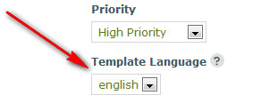
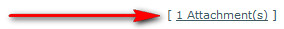
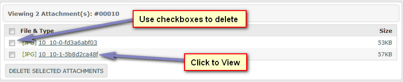
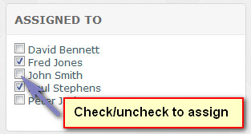
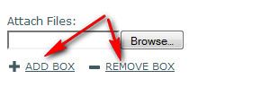
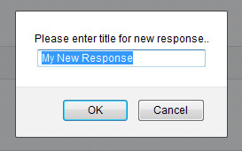

Documentation -


Documentation -

COMMERCIAL VERSION INCLUDES: - FREE upgrades for life - One time payment, NO subscriptions - ALL features unlocked and unlimited
Overview
Here you can view a support ticket and manage the ticket.
Quick Link Bar
This contains the ticket ID and its status, along with the following:
Add Reply - Slow scrolls to reply box
Close - Closes ticket. No emails are sent.
Lock - Locks ticket. If locked, visitor cannot re-open ticket. No emails are sent.
Create Dispute Ticket - Creates dispute from ticket. No emails are sent. If used, refer to 'Viewing Disputes' page.
User Details
Details of the original ticket, including the department, user and email are shown in the right hand menu.
Edit Ticket
Clicking the icon on the ticket subject/details bar launches the ticket edit window.
Here you can change details entered by the ticket creator. Any custom field data will also be shown and can be edited.
Template Language - This is only relevant if you are using the multi language option.

Edit Notification
If there is more than 1 support team user in the system, an optional box is shown in the dispute edit window called 'Describe this Change for Other Users'. Text
entered here is sent in an email to other users. Useful if you make major edits and want to inform other users. If the box is left blank, no email is sent.
Silent mode is also available to the administrative user. If this is enabled, dispute edit notification is always sent, but only to the administrative user (unless email overrides are
in place).
To enable this, open the 'admin/control/user-defined/defined2.inc.php' file and set the 'ENABLE_SILENT_EDIT_NOTIFICATION', to 1.
You can also send this to alternative email addresses via the 'ENABLE_SILENT_EDIT_NOTIFICATION_EMAIL' override option, which is useful if other users need to be informed. Enter
addresses, separated with a comma. Example:
define('ENABLE_SILENT_EDIT_NOTIFICATION', 1);
define('ENABLE_SILENT_EDIT_NOTIFICATION_EMAIL', 'joe@gmail.com,fred@gmail.com,sarah@yahoo.co.uk');
Attachments
If a ticket has attachments, click the link below the message to view the attachments window:

The attachments window lets you view or delete attachments. Delete attachments via the checkboxes provided:

Assign To
This enables you to assign the ticket to specific users ONLY, but ONLY if the dispute department is set to have tickets manually assigned to users.
This is ONLY seen by the administrator OR if a user has access to the ticket assign page. Only users assigned to specific tickets can see them, along with the administrator who by default, can
always see all tickets. Use the checkboxes provided to assign tickets. Tickets can be assigned to a single user or multiple users.
Note that further notifications are only sent to assigned users, so if you are the administrator and want to receive ticket reply notifications, you should always add yourself to the assigned list.

If a ticket is not assigned, it defaults to being viewable by all users who have access to its department.
Notepad
The notepad is a useful feature that lets you make notes about a ticket. This is not seen by visitors, but can be viewed and edited by users
with relevant permissions. To enter a note type in the notepad box and click out of the box, this auto updates the note.
Alternatively, click the small icon to launch the notepad window where you can view and edit the notes.

Adding Reply
To add reply, type message in the reply box. You can format the text using BBCode if this feature is enabled. Click the buttons to add formatting, or
click the ? button for more tags and information:

You can also apply a standard response if any are available via the link on the reply header.
Note that reply box only shows for open tickets. If box isn`t visible, open ticket first.
Note that BBCode is not parsed in email templates.
Edit/Delete Replies
Use the edit/delete links provided beneath each reply to edit or delete reply.

Reply Attachments
If a reply has attachments, click the link below the reply message to view the attachments window. See the notes above about managing attachments.
Custom Fields
Custom field data will be shown beneath the reply box if enabled.
Attachments
Attachments can be added to all replies. The free version allows a single attachment per reply, the commercial version unlimited. Note that for the commercial
version there are no limits on the amount of attachments admin can add per reply. By default 10 max is allowed for admin. To increase edit the 'ADMIN_ATTACH_BOX_OVERRIDE' option
in the 'admin/control/user-defined/defined2.inc.php' file.
Use the links to add/remove attachment boxes.

Status
Specify ticket status after reply.
Add Response
When you add this reply, do you want to add the reply as a standard response? If yes, response will be added to same category as ticket. If selected, a prompt box will appear asking you to give the new response a reference title/name.

Send Mail
Do you wish to send e-mail notification about this ticket reply?
Merge With Ticket #
Do you want to merge this ticket with another one after the reply is added? If merged, reply is added to specified ticket and current ticket is deleted.
Click box to launch ticket window. Note that tickets can only be merged with tickets with the SAME e-mail address.
Preview Message
Click to show preview of ticket reply message.
Help Tips
The same or additional information may be provided by hovering your cursor over the  image next to each heading in the admin area if applicable.
image next to each heading in the admin area if applicable.